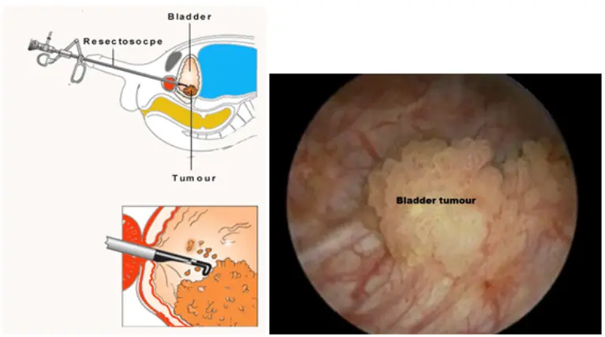

استئصال أورام المثانة بالمنظار (TURBT)
التشخيص الدقيق والاستئصال الجذري لأورام وجدار المثانة عبر مجرى البول الطبيعي بدون أي شق جراحي مع الفحص الباثولوجي الفوري لحواف الأمان.

ما هي تقنية TURBT والمناظير المتقدمة؟
تُعد تقنية TURBT المعيار الذهبي العالمي (Gold Standard) لتشخيص وعلاج أورام المثانة السطحية والمتوغلة؛ حيث يدخل منظار دقيق مزود بحلقة استئصال كهربائية أو بلازما ثنائية القطب (Bipolar Loop) لإزالة النسيج النامي وتبخير الأوعية المغذية بدقة فائقة وبدون أي نزيف يذكر.
- استئصال شامل ودقيق: إزالة النسيج الورمي بالكامل وصولاً إلى الطبقة العضلية لضمان نظافة حواف الأمان ومنع بقايا الخلايا.
- تقنية البلازما ثنائية القطب (Bipolar): تحكم مطلق بالنزيف عبر سائل الملح الفسيولوجي الطبيعي، مما يتفادى متلازمة امتصاص السوائل ومخاطرها.
- علاج موضعي فوري (Instillation): إمكانية حقن جرعة وقائية موضعية داخل تجويف المثانة فور انتهاء المنظار لمنع تكرار الورم مستقبلاً.
دواعي إجراء منظار استئصال أورام المثانة
أعراض تستلزم الفحص
رحلة العلاج والتعافي خطوة بخطوة
-
1
التشخيص والتجهيز الدقيق
فحص السونار، تحليل البول الخلوي (Urine Cytology)، والتنسيق الطبي المسبق مع استشاري التخدير وفحوصات الدم الروتينية.
-
2
التدخل بالمنظار (TURBT)
تخدير نصفي أو كلي لطيف بدون ألم، استئصال الورم وتجريف قاعدته بدقة متناهية تحت تكبير بصري متقدم خلال 30 إلى 45 دقيقة.
-
3
المتابعة ورفع القسطرة
تثبيت قسطرة غسيل بولية لطيفة لمدة 24-48 ساعة لضمان نقاء البول وراحة المثانة، يعقبها رفعها ومغادرة المستشفى بنجاح.
-
4
تقرير الباثولوجي والمتابعة
مناقشة النتيجة النسيجية التفصيلية مع د. كريم زاهر لتحديد استراتيجية الحماية الدورية أو الحاجة لحقن وقائي دوري.
تجارب المرضى بعد المنظار
star تجربة موثقة"راجعت د. كريم بعد ظهور بول مدمم فجأة، ومن خلال الفحص الفوري تم اكتشاف ورم سطحي مبكر واستئصاله بالمنظار دون أي جراحة أو ألم يذكر، وغادرت المستشفى في اليوم التالي والنتيجة كانت مطمئنة تماماً وفريق العيادة يتابع معي دورياً بكل أمانة."
الأسئلة الشائعة حول منظار استئصال ورم المثانة
هل تسبب العملية أي آلام أو جروح في البطن؟
متى تظهر نتيجة تحليل عينة الورم المستأصل؟
متى يمكن للمريض استئناف عمله وحياته الطبيعية؟
احجز كشفك واستشارتك مع د. كريم زاهر
تقييم شامل بالتصوير والمنظار التشخيصي لتحديد نوع الورم ووضعه واختيار الخطة العلاجية الأنسب لحالتك.
زهراء المعادي - الشطر الثالث عشر - برج الندى (الدور الأول).